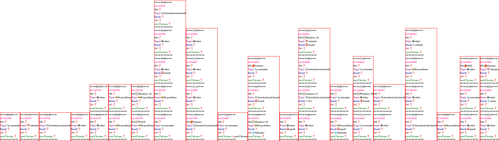

<map name='20230922'>
<area shape='rect' title='Junk button Just updated to 115.2.3 (64-bit) before the JUNK butto' 
coords='0,752,133,939' alt='question:1424766' href='https://support.mozilla.org/questions/1424766'>
<area shape='rect' title='Updated to Supernova 115.2.3. (64-bit). Calendar is empty/no data ' 
coords='133,752,258,939' alt='question:1424767' href='https://support.mozilla.org/questions/1424767'>
<area shape='rect' title='Help! Thunderbird is treating this like a brand new install Someho' 
coords='258,752,468,939' alt='question:1424769' href='https://support.mozilla.org/questions/1424769'>
<area shape='rect' title='Update changed IMAP to POP, using Earthlink After the update to Th' 
coords='468,752,592,939' alt='question:1424773' href='https://support.mozilla.org/questions/1424773'>
<area shape='rect' title='Thunderbird appears to have deleted emails from server! Having use' 
coords='592,752,716,939' alt='question:1424778' href='https://support.mozilla.org/questions/1424778'>
<area shape='rect' title='missing emails in thunderbird INBOX ‘I use thunderbird for my emai' 
coords='592,565,716,752' alt='question:1424779' href='https://support.mozilla.org/questions/1424779'>
<area shape='rect' title='descarga nuevamenes mensajes, del servidor que ya han sido descarg' 
coords='716,752,867,939' alt='question:1424782' href='https://support.mozilla.org/questions/1424782'>
<area shape='rect' title='Download new messages, from the server that have already been down' 
coords='716,565,867,752' alt='question:1424783' href='https://support.mozilla.org/questions/1424783'>
<area shape='rect' title='periodic filter not running on rss feed Hey, I am trying to use a ' 
coords='867,752,1018,939' alt='question:1424788' href='https://support.mozilla.org/questions/1424788'>
<area shape='rect' title='Thunderbird does not send emails from my @me.com (apple) account. ' 
coords='867,565,1018,752' alt='question:1424789' href='https://support.mozilla.org/questions/1424789'>
<area shape='rect' title='Font size in latest version of Thunderbird. The font size in the l' 
coords='1018,752,1228,939' alt='question:1424791' href='https://support.mozilla.org/questions/1424791'>
<area shape='rect' title='Error on Trying to Send Thunderbird 115.2.3 installed itself yeste' 
coords='1018,565,1228,752' alt='question:1424792' href='https://support.mozilla.org/questions/1424792'>
<area shape='rect' title='Hotmail (Outlook365) Credentials pop-up Right then, about a week a' 
coords='1018,378,1228,565' alt='question:1424795' href='https://support.mozilla.org/questions/1424795'>
<area shape='rect' title='Thunderbird 102 64 bit lost ability to use recent folders with mov' 
coords='1018,191,1228,378' alt='question:1424796' href='https://support.mozilla.org/questions/1424796'>
<area shape='rect' title='The account email is being processed.  Please wait until processin' 
coords='1018,4,1228,191' alt='question:1424797' href='https://support.mozilla.org/questions/1424797'>
<area shape='rect' title='lost files during migration Hi, Ive got a sticky problem which occ' 
coords='1228,752,1438,939' alt='question:1424798' href='https://support.mozilla.org/questions/1424798'>
<area shape='rect' title='new update for Thunderbird: attachment download has disappeared my' 
coords='1228,565,1438,752' alt='question:1424800' href='https://support.mozilla.org/questions/1424800'>
<area shape='rect' title='Thunderbird Tags How can I have my emails automatically tagged?  o' 
coords='1228,378,1438,565' alt='question:1424801' href='https://support.mozilla.org/questions/1424801'>
<area shape='rect' title='Levelezés A levelezésban nemtudok levelet küldeni és fogadni. A kü' 
coords='1228,191,1438,378' alt='question:1424802' href='https://support.mozilla.org/questions/1424802'>
<area shape='rect' title='TB 115.2.3 SUPERNOVA Several attributes disappeared with latest up' 
coords='1438,752,1636,939' alt='question:1424807' href='https://support.mozilla.org/questions/1424807'>
<area shape='rect' title='Deletions in Beta Version I am using Beta Version 118.0b5 (64-bit)' 
coords='1636,752,1846,939' alt='question:1424811' href='https://support.mozilla.org/questions/1424811'>
<area shape='rect' title='icloud.com account folders not available in ThunderBird 102.15.1 T' 
coords='1636,565,1846,752' alt='question:1424814' href='https://support.mozilla.org/questions/1424814'>
<area shape='rect' title='Supernova spell checker So, I upgraded to SuperNova and my spell c' 
coords='1636,378,1846,565' alt='question:1424815' href='https://support.mozilla.org/questions/1424815'>
<area shape='rect' title='O assunto do e-mail não corresponde ao e-mails selecionado. Bom di' 
coords='1846,752,1970,939' alt='question:1424819' href='https://support.mozilla.org/questions/1424819'>
<area shape='rect' title='Thunderbird 115.2.3 In response to Wayne Mery, please find attache' 
coords='1970,752,2180,939' alt='question:1424824' href='https://support.mozilla.org/questions/1424824'>
<area shape='rect' title='Can receive but cannot send Outgoing server not recognized, even t' 
coords='1970,565,2180,752' alt='question:1424825' href='https://support.mozilla.org/questions/1424825'>
<area shape='rect' title='I cannot get my profile from my C drive on my old computer onto th' 
coords='1970,378,2180,565' alt='question:1424829' href='https://support.mozilla.org/questions/1424829'>
<area shape='rect' title='Thunderbird Calendar Not Sending Out Invitations to Other Addresse' 
coords='1970,191,2180,378' alt='question:1424831' href='https://support.mozilla.org/questions/1424831'>
<area shape='rect' title='thunderbird completely slowed down the PC Hi, I have had TB workin' 
coords='2180,752,2331,939' alt='question:1424836' href='https://support.mozilla.org/questions/1424836'>
<area shape='rect' title='duplicate contacts I am wondering why the Duplicate Contact Manage' 
coords='2180,565,2331,752' alt='question:1424839' href='https://support.mozilla.org/questions/1424839'>
<area shape='rect' title='Text signature shows extra characters When creating a new message ' 
coords='2331,752,2466,939' alt='question:1424840' href='https://support.mozilla.org/questions/1424840'>
<area shape='rect' title='Problems with setting the size of the letters in a satisfying way.' 
coords='2331,565,2466,752' alt='question:1424843' href='https://support.mozilla.org/questions/1424843'>
<area shape='rect' title='Make show results as list the default when searching Hello, It wou' 
coords='2331,378,2466,565' alt='question:1424844' href='https://support.mozilla.org/questions/1424844'>
<area shape='rect' title='Interesting message Interest message today. We cant compact your m' 
coords='2466,752,2676,939' alt='question:1424846' href='https://support.mozilla.org/questions/1424846'>
<area shape='rect' title='Thunderbird has just auto-updated to 115.2.3 and it looks terrible' 
coords='2466,565,2676,752' alt='question:1424847' href='https://support.mozilla.org/questions/1424847'>
<area shape='rect' title='E-mail? I just downloaded the newest version of Thunderbird.  I am' 
coords='2676,752,2886,939' alt='question:1424848' href='https://support.mozilla.org/questions/1424848'>
<area shape='rect' title='In Supernova, many of the Sort By setting are greyed out, includin' 
coords='2676,565,2886,752' alt='question:1424849' href='https://support.mozilla.org/questions/1424849'>
<area shape='rect' title='Fetch email and preview has diff subject than does the email selec' 
coords='2676,378,2886,565' alt='question:1424850' href='https://support.mozilla.org/questions/1424850'>
<area shape='rect' title='Unified folder and IMAP servers with all folders under INBOX/ beha' 
coords='2676,191,2886,378' alt='question:1424852' href='https://support.mozilla.org/questions/1424852'>
<area shape='rect' title='Message filters randomly triggered when email fetched. I have noti' 
coords='2886,752,3037,939' alt='question:1424854' href='https://support.mozilla.org/questions/1424854'>
<area shape='rect' title='Email will not connect with gmail account Thunderbird updated on m' 
coords='3037,752,3170,939' alt='question:1424856' href='https://support.mozilla.org/questions/1424856'>
<area shape='rect' title='resizing message header pane Thunderbird 115.2.3.  Mac OS 10.15.7 ' 
coords='3037,565,3170,752' alt='question:1424857' href='https://support.mozilla.org/questions/1424857'>
<area shape='rect' title='Thunderbird15.2.3 on OSX 10.14.6 [Receive but cannot send email] R' 
coords='3037,378,3170,565' alt='question:1424858' href='https://support.mozilla.org/questions/1424858'>
<area shape='rect' title='HOW do I get the man display layot bak as it was prior to the 115.' 
coords='3170,752,3295,939' alt='question:1424862' href='https://support.mozilla.org/questions/1424862'>
<area shape='rect' title='Thunderbird deleting recent material despite dont download in rete' 
coords='3170,565,3295,752' alt='question:1424863' href='https://support.mozilla.org/questions/1424863'>
<area shape='rect' title='Calendar shows incorrect time for all events Hi,  I was trying to ' 
coords='3170,378,3295,565' alt='question:1424864' href='https://support.mozilla.org/questions/1424864'>
</map>